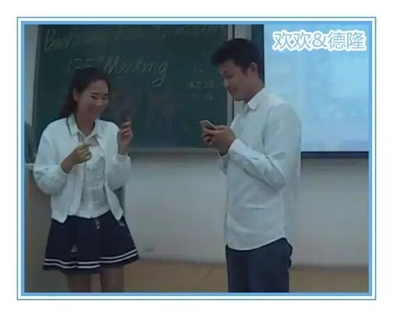
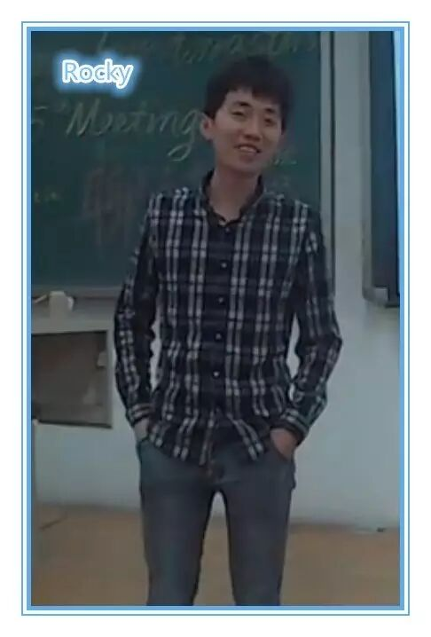
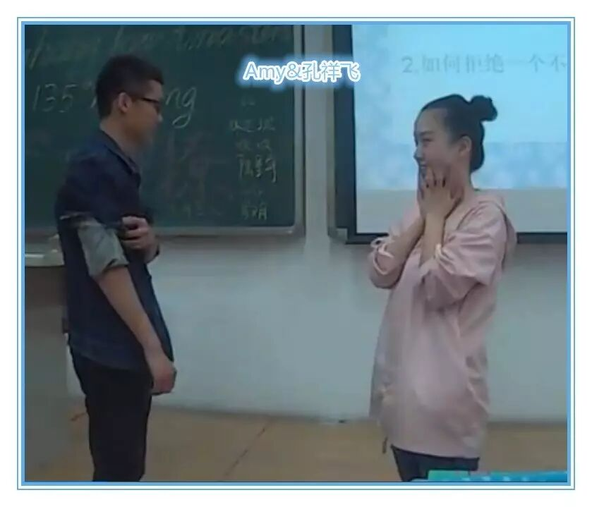
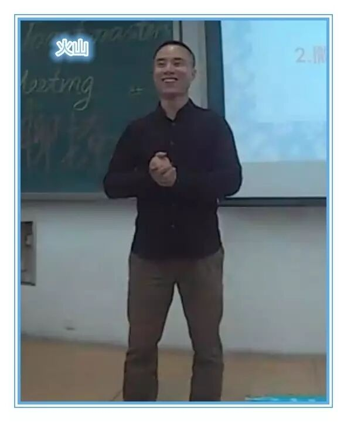
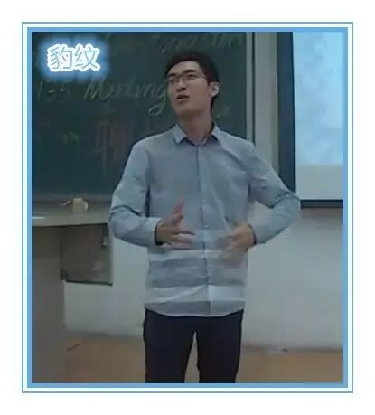
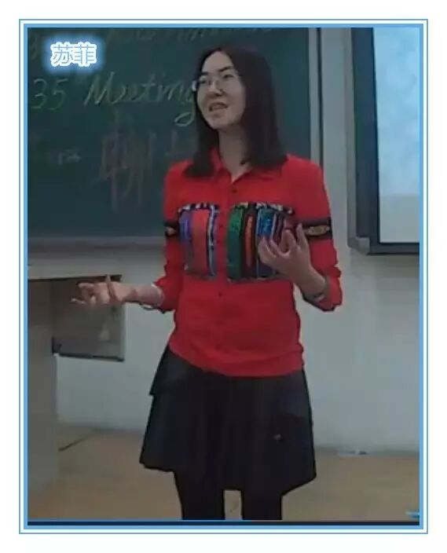
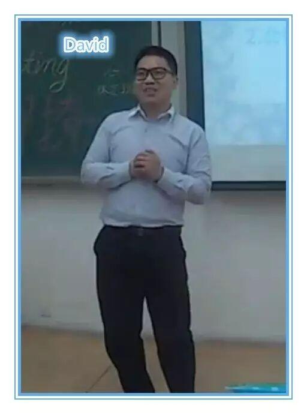
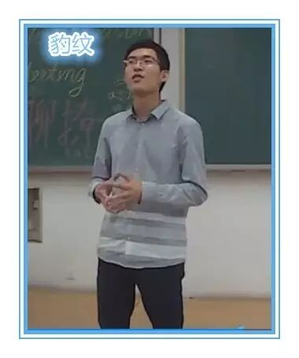
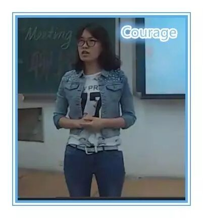

话说4月29日晚于北航新主楼B204，众撩神头马云集，撩焰四起，共话撩计，小编我是身不能至而心向往之啊，如今只能通过视频来恶补其时的撩神头马论剑之盛况了。（PS：木有照片，我已经尽力抓取你们在视频中最美的瞬间了，见谅~）
Table Topic Session
1. 前任婚礼现场发现一男神/女神，How to “撩”？

作为本期话题的始作俑者，德隆居然秒变纯洁呆萌小鲜肉，任女神自上而下，左右开撩，他就是不上套儿，是我打开放式错误吗，抑或是从未被女神聊过，受宠若惊而不知所措了？
2. 撩妹/撩汉和学会C++，哪一个更难？

难度系数：撩妹>C++>撩汉，自曝撩过班里的所有妹子，C++挂过两次（敢情时间都花在撩妹上了，没空备考，哈哈哈）。
3. 如何拒绝一个不会撩强撩的人？

4. 撒娇女人会好命吗？

1. 好不好命是个伪命题（搞哲学的所见就是不一样）；2.撒娇也要分对象 (作为头马头号暖男，火山绝对是撒娇的好对象)；3. 没有一个特定的性格是绝对有优势的，萝卜青菜，各有所爱。
5. 在撩妹/撩汉过程中，“聊”和“撩”哪个更重要？

在东北话里“撩”自带高颜值属性（所谓长相撩人），聊是撩的基础，撩比聊更重要，“撩”计不够，“聊”计来凑，头马是你提高聊计的不二选择！
6. 女生应不应该主动追求男生？

现在还能提出这样的问题，是男女不平等的体现（女王大大王气侧漏，我仿佛看到她头上飘着一坨象征王气的紫色祥云），那种靠洗衣做饭追男生的方式都太low，要时刻保持身上的女王气质，勾引男生们跪倒在你们的石榴裙下（如果这也算追男生的话，那女王大大岂不是时刻在追俱乐部的男生们，包括小编，让我偷着乐会）。
7. 撩妹的男生都很花心吗？

撩妹和花心没有直接的关系，间接的也没有（这位仁兄一定很会撩妹，所以极力自辩），会撩是沟通能力强的体现，“撩”是交流的桥梁，通过“撩”可以探寻彼此的内心世界（只是内心世界吗，哈哈），相反，不能撩不代表不花心，那是他们技能不够（这还倒打一耙，原本小编还想通过不会“撩”伪装专一纯洁的，被无情地戳穿了）。
Prepared Speech Session
豹纹：CC-7 路过

“故事的开头总是这样，适逢其会，猝不及防。故事的结局总是这样，花开两朵，天各一方。”
欢迎路过的人，那时的你、我彼此路过，我希望能有一段时光，我们和路一起过。
小编曰：感谢上苍安排豹纹于2015年3月13日路过新主D849，在那次路过中他收获了激情，力量，感动，并将这一份感动继续传递给后来路过这里的人。
Courage：CC-1 最不后悔的事

曾经为一个选择而后悔，但没有这个错误的选择我就无法遇见你，本来后悔的事因为同你的相遇而变成最不后悔的事。
小编曰：如果始终以发展的眼光来看问题的话，即使到达人生的终点仿佛也无法判断过去的某一节点所作抉择的对与错，塞翁失马焉知非福，不错过A, 焉能遇见B，如此想来，人生也就没啥可后悔的了。
到了该放大合照的时候了，小编左右奔走呼号也没能找到，在此想吟诗一句作为总结：
花开堪撩直须撩，莫待无花空撩枝。